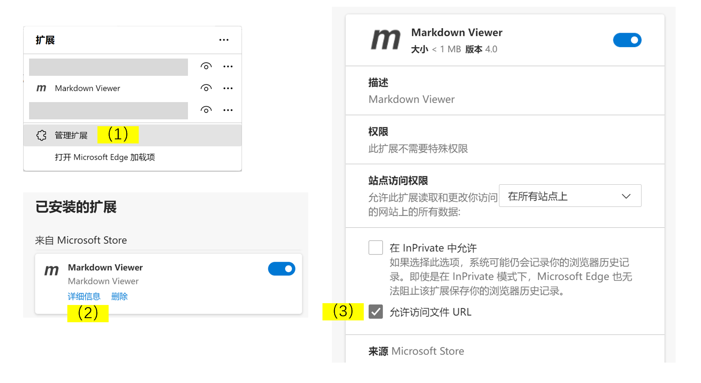
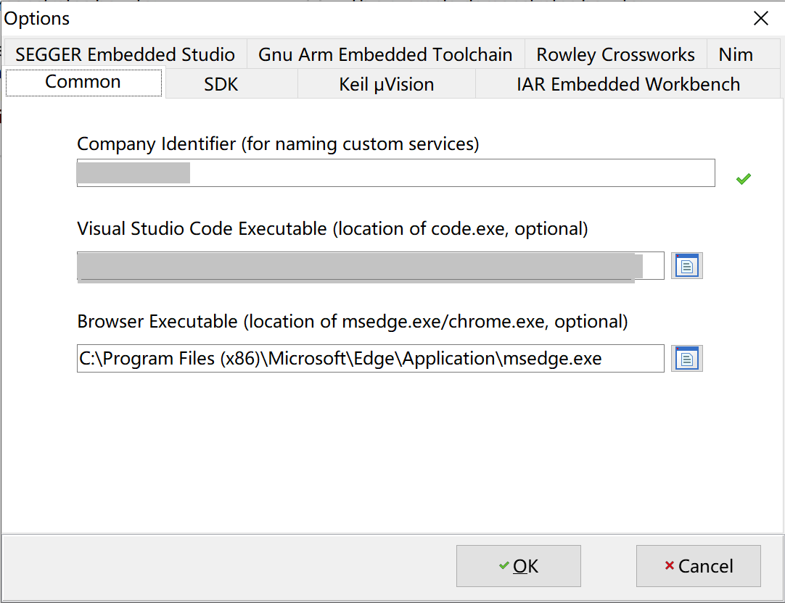

1. Under which OS can we develop projects on ING918/ING916?
SDK can be used on Windows,Linux and macOS. But some IDEs may not support Linux or macOS.
2. How to evaluate RF performance quickly?
-
Method 1: Use a Bluetooth Tester
-
From the main menu of
ingWizardTest → Download BQB RF Test Binary to download BQB test program; -
Connect HCI UART to tester for automatic testing.
UART configurations:
- 2 wire, no hardware flow control
- TX and RX are using PIN 2 and 3 respectively
- Band rate: 115200
- Data bits: 8
- Stop bits: 1
- Parity: none
-
-
Method 2: Use a spectrum analyzer
-
From the main menu of
ingWizardTest → Download BQB RF Test Binary to download BQB test program; -
From the main menu of
ingWizardTools → More → BQB RF Test to start the BQB RF Test tool; -
Use BQB RF Test tool to control device to transmit CW and measure its strength and frequency offset;
Or,
- Call
gap_vendor_tx_continuous_waveAPI in existing project to transmit CW and measure its strength and frequency offset.
-
-
Method 3: Use dev-board to do a simple evaluation
3. How to capture logs?
Different problems need different logs:
-
System death (including HARD_FAULT, ASSERTION or HEAP_OOM events)
Memory & registers dumps are needed in these cases. Memory can be dumped through two ways.
-
Use a debug probe
Check out User Manual for details.
For scenarios where power saving is enabled, it is recommended to attach the probe after such problem has occurred. Some IDEs will always reset chips when starting debugging, so it is recommended to use J-Link Commander。
-
Use code
trace.cprovides a function namedtrace_full_dump. Call it in the callbacks of events likeHARD_FAULT,ASSERTIONandHEAP_OOMto dump memory automatically. Example UART GATT Console demonstrates this, and inputassertinto serial will trigger an ASSERTION manually and memory dump there after.
-
-
Issues related to Bluetooth stack
Internal Trace or sniffing of air traffic are preferred for these cases.
-
Internal Trace
Project Wizard will add codes to support Trace. When Trace is used, system should not be allowed to enter deep sleep mode.
-
Sniffing of air traffic
Use Ellisys Bluetooth Tracker or Sodera Series of Bluetooth Protocol Analyzers to capture Bluetooth traffic over the air.
-
4. How to do update over the air (OTA)?
Here is a quick demo of FOTA.
-
Service: Add a OTA service
ingWizardcan add INGCHIPS FOTA for new projects. Developers are free to design their own FOTA service. -
Client: we provide below clients/tools implemented in different languages for INGCHIPS FOTA service
5. How to view Markdown docs of SDK examples?
Wizard treats doc/index.md in a project directory as its doc.
Complete below configurations, and use “More info..” from pop up menu to
view such docs.
-
Install Markdown View
Install the Markdown Viewer extension, a Internet browser can be turned into a Markdown viewer.
-
Edge
-
Install from Microsoft Store;
-
Open “Extensions” → “Manage Extensions” → “Markdown Viewer” → “Detailed Information”, and check “Allow access file URL” like this:

-
-
Other browsers（Chrome/Opera）
Please follow the steps on Markdown Viewer.
-
-
Open Wizard’s Options dialog and fill in the full path to the viewer’s executable.
